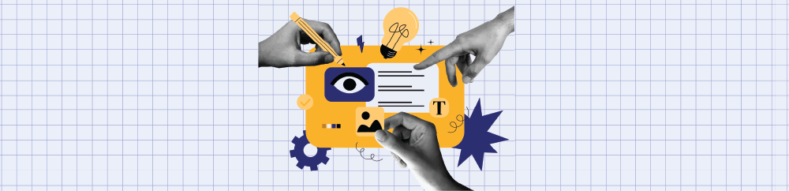

Meet Our Team
Joel Bruns
Dir. of Digital UX
Lisa Barton
Sr. UX Strategist
Lexi Keller
Jr. UX Designer
Why a Design System?
Our UX team is making a design system because we need a unified foundation that brings consistency, efficiency, and scalability to our product experiences.
By codifying design decisions into reusable components, styles, and patterns, we empower teams with INPRS to build faster, reduce ambiguity, and maintain visual and
functional coherence across platforms. It’s not just about aesthetics, it’s about creating a shared language that aligns design and development, supports
accessibility, and evolves with our users’ needs.